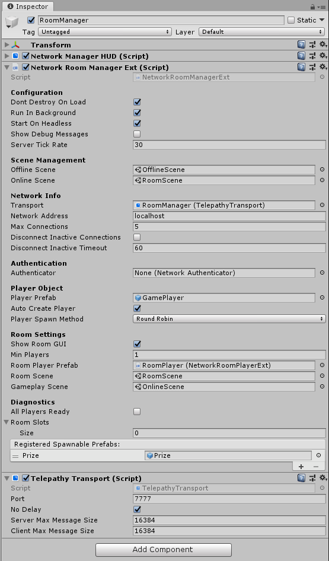

Network Room Manager
**Please see the Room example in the Examples folder in your Mirror folder
The Network Room Manager is a specialized type of Network Manager that provides a multiplayer room before entering the main play scene of the game. It allows you to set up a network with:
- A maximum player limit
- Automatic start when all players are ready
- Option to prevent players from joining a game in progress
- Customizable ways for players to choose options while in room
There are two types of player objects with the Network Room Manager:
Room Player Prefab
- One for each player
- Created when client connects, or player is added
- Persists until client disconnects
- Holds ready flag and configuration data
- Handles commands in the room
- Must use the Network Room Player component
Player Prefab
- One for each player
- Created when game scene is started
- Destroyed when leaving game scene
- Handles commands in the game

Properties
- Show Room GUI
Show the default OnGUI controls for the room. - Min Players
Minimum number of players needed to start a game. - Room Player Prefab
The prefab to create for players when they enter the room (requires Network Room Player component). - Room Scene
The scene to use for the room. - Gameplay Scene
The scene to use for main game play. - pendingPlayers
List<PendingPlayer> that holds players that are ready to start playing. - roomSlots
List<NetworkRoomPlayer> that manages the slots for connected clients in the room. - allPlayersReady
Bool indicating if all players are ready to start playing. This value changes as players invokeCmdChangeReadyStateindicating true or false, and will be set false when a new client connects.
Methods
Server Virtual Methods
public virtual void OnRoomStartHost() {}
public virtual void OnRoomStopHost() {}
public virtual void OnRoomStartServer() {}
public virtual void OnRoomServerConnect(NetworkConnection conn) {}
public virtual void OnRoomServerDisconnect(NetworkConnection conn) {}
public virtual void OnRoomServerSceneChanged(string sceneName) {}
public virtual GameObject OnRoomServerCreateRoomPlayer(NetworkConnection conn)
{
return null;
}
public virtual GameObject OnRoomServerCreateGamePlayer(NetworkConnection conn)
{
return null;
}
public virtual bool OnRoomServerSceneLoadedForPlayer(GameObject roomPlayer, GameObject gamePlayer)
{
return true;
}
public virtual void OnRoomServerPlayersReady()
{
ServerChangeScene(GameplayScene);
}
Client Virtual Methods
public virtual void OnRoomClientEnter() {}
public virtual void OnRoomClientExit() {}
public virtual void OnRoomClientConnect(NetworkConnection conn) {}
public virtual void OnRoomClientDisconnect(NetworkConnection conn) {}
public virtual void OnRoomStartClient() {}
public virtual void OnRoomStopClient() {}
public virtual void OnRoomClientSceneChanged(NetworkConnection conn) {}
public virtual void OnRoomClientAddPlayerFailed() {}